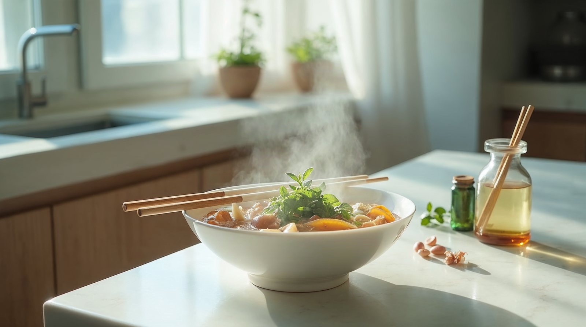
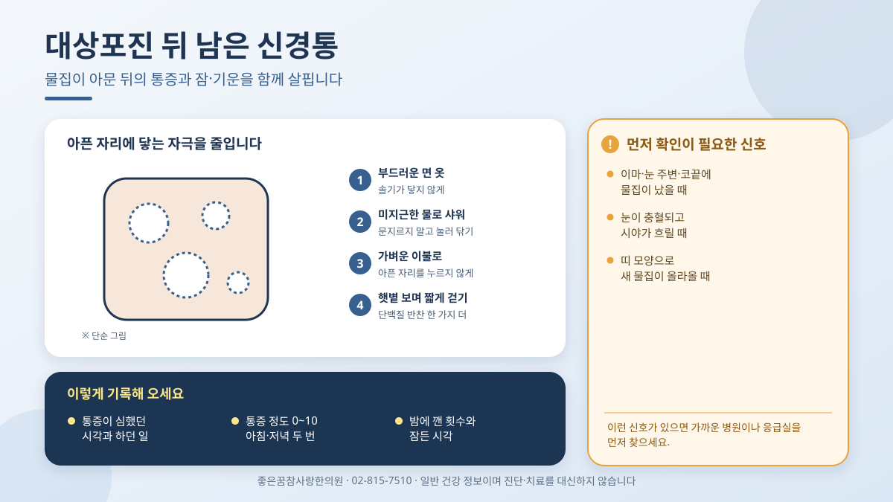

이종호 한의사 감수좋은꿈참사랑한의원 대표원장 (한의사 면허번호 19769)발행 2026-11-26 · 수정 2026-11-26
이 글의 차례
물집은 다 아물었습니다. 딱지도 떨어지고, 거울로 보면 옅은 자국만 남았습니다. 그런데 옷을 입다가 셔츠가 옆구리를 스치는 순간 화끈하고 따가운 통증이 올라옵니다. 밤에 이불이 닿기만 해도 잠이 깨고, 겉으로는 멀쩡하니 가족에게 설명하기도 어렵습니다.
이처럼 대상포진이 지나간 자리에 통증이 오래 남는 것을 대상포진 뒤 신경통이라고 부릅니다. 흔히 물집이 아문 뒤에도 석 달 넘게 통증이 이어지는 경우를 말하며, 나이가 많을수록, 처음 통증이 심했을수록 더 생기기 쉽다고 알려져 있습니다.
통증 조절은 피부과·신경과·통증 클리닉의 치료가 먼저이고, 한의원에서는 그 곁에서 잠과 식사, 지친 몸의 흐름을 함께 살핍니다.
진료실에서 이런 말씀을 자주 듣습니다. "다 나았다는데 왜 저만 아직 아픈지 모르겠어요." 남들은 끝났다고 말하는데 나만 계속 아프다는 것, 그것이 이 통증의 가장 외로운 부분인 것 같습니다.
옷깃 하나, 바람 한 줄기에도 몸이 움찔하는 날이 이어지면 사람이 예민해지고 지칩니다. 잠이 깨지고, 입맛이 떨어지고, 외출이 줄어듭니다. 그동안 얼마나 애쓰셨을까 싶습니다.
왜 물집이 아문 뒤에도 아플까요
대상포진은 어릴 때 앓은 수두 바이러스가 몸속 신경절에 조용히 숨어 있다가, 면역이 떨어진 틈에 다시 깨어나 신경을 따라 내려오며 생깁니다. 그래서 물집이 몸의 한쪽에, 신경이 지나가는 띠 모양으로 늘어서는 경우가 많습니다.
바이러스가 지나가면서 신경에 염증과 손상을 남기면, 피부는 아물어도 신경은 한동안 예민한 채로 남을 수 있습니다. 고장 난 경보기처럼 작은 자극에도 크게 울리는 것이지요. 그래서 옷이 스치는 가벼운 감각이 통증으로 느껴지기도 합니다.
통증의 모양도 여러 가지입니다. 화끈하게 타는 듯한 통증, 전기가 오듯 찌릿한 통증, 바늘로 콕콕 찌르는 느낌, 그 자리가 가려우면서 아픈 느낌이 섞여 나타납니다. 반대로 그 자리 감각이 둔하게 느껴지는 분도 계십니다.
한의학에서는 대상포진을 띠처럼 둘러 난다고 하여 사전창(蛇串瘡) 등의 이름으로 살펴 왔습니다. 물집이 지나간 뒤 남은 통증을 볼 때는 그 자리만이 아니라 지친 몸 전체, 잠과 소화, 체력의 흐름을 함께 봅니다.
다른 통증과는 어떻게 다를까요
갈비뼈나 근육 통증
옆구리 통증은 근육이 놀랐거나 갈비뼈 쪽 문제일 때도 생깁니다. 이런 통증은 몸을 비틀거나 누를 때 아프고, 피부를 살짝 스치는 것만으로 아프지는 않은 경우가 많습니다. 물집이 났던 자리와 통증 자리가 겹치는지가 중요한 단서입니다.
물집이 나기 전의 대상포진
대상포진은 물집이 보이기 며칠 전부터 한쪽 몸이 따갑고 쑤시는 통증으로 먼저 시작되기도 합니다. 새로 한쪽에 띠 모양으로 따가운 통증이 생겼다면 물집이 올라오는지 잘 보시고, 물집이 보이면 가능한 한 빨리 피부과나 내과 진료를 받으세요. 항바이러스 치료는 일찍 시작할수록 좋다고 알려져 있습니다.
얼굴의 삼차신경통
얼굴에 생긴 대상포진 뒤 통증은 삼차신경통과 비슷하게 느껴질 수 있습니다. 그 자리에 물집이 있었는지가 둘을 나누는 첫 단서가 됩니다.
예를 들면 이런 경우입니다
실제 어느 분의 사연이 아니라, 진료실에서 자주 듣는 모습을 바탕으로 그려 본 장면입니다.
예를 들어 옆구리에 대상포진을 앓은 뒤 몸에 닿는 옷이 싫어 헐렁한 옷만 입고, 잠잘 때도 아픈 쪽을 위로 두고 한쪽으로만 눕게 된 어르신이 계실 수 있습니다. 이럴 때는 통증만이 아니라 한쪽으로만 누워 굳은 어깨와 허리, 끊긴 잠을 함께 봅니다.
통증약을 먹으면서 변비가 생기고 입맛이 떨어졌다는 분도 계십니다. 이런 이야기는 약을 처방한 선생님께 꼭 전하시도록 권하고, 한의원에서는 식사와 대소변의 흐름을 같이 살핍니다.
대상포진 이후로 기운이 하나도 없어 외출이 줄고 마음까지 가라앉았다는 분도 많습니다. 몸이 크게 한 번 앓고 지나갔다는 뜻이기도 합니다. 체력이 돌아올 시간을 함께 기다리며, 그 사이 무엇을 먼저 챙길지 정합니다.
밤에 통증이 더 크게 느껴지는 이유
낮에는 그럭저럭 버티다가 밤만 되면 통증이 커진다는 말씀을 많이 듣습니다. 낮에는 일과 사람, 소리가 주의를 나눠 가져가지만, 불을 끄고 누우면 몸의 감각만 또렷하게 남기 때문입니다. 이불의 무게와 몸이 식는 것도 예민한 자리를 건드립니다.
그래서 저는 대상포진 뒤 통증을 이야기할 때 잠자리부터 같이 들여다봅니다. 아픈 쪽이 눌리지 않는 자세, 너무 덥거나 춥지 않은 방 온도, 잠들기 전 한 시간의 조용한 습관이 생각보다 많은 것을 바꿉니다. 잠을 한 시간 더 지키는 일이 다음 날 통증을 견디는 힘이 되기도 합니다.
회복을 기다리는 동안의 마음
대상포진은 몸이 지쳐 있을 때 찾아오는 경우가 많습니다. 그러니 통증이 남아 있다는 것은 몸이 아직 회복 중이라는 신호로 읽을 수도 있습니다. 예전처럼 움직이지 못하는 자신을 탓하기보다, 지금은 몸을 조금 더 아껴 줘야 할 때라고 생각해 주셨으면 합니다.
통증이 길어지면 짜증이 늘고, 가족에게 날카로워지고, 그런 자신이 또 싫어지기도 합니다. 진료실에서 이런 이야기를 꺼내 주셔도 괜찮습니다. 몸과 마음은 따로 아프지 않아서, 마음이 지친 이야기도 진찰의 일부로 듣습니다.
피부가 아물어도 몸은 아직 회복 중입니다
물집이 아물면 주변에서는 다 끝났다고 여깁니다. 하지만 대상포진을 앓고 난 몸은 생각보다 오래 기운을 되찾는 중입니다. 입맛이 예전 같지 않고, 오후만 되면 몸이 무겁고, 조금만 무리해도 그 자리가 다시 화끈거린다는 말씀을 자주 듣습니다.
이 시기에는 예전의 속도를 서둘러 되찾으려 하기보다, 하루의 일을 조금 덜어 내고 잠과 끼니를 먼저 챙기시길 권합니다. 몸이 버틸 힘을 다시 모으는 동안, 무엇을 줄이고 무엇을 지킬지 함께 정해 보겠습니다.
먼저 이렇게 여쭙니다
결과지나 처방전이 있다면 함께 펼쳐 놓고, 저는 대략 이런 순서로 여쭙습니다.
- 물집은 언제, 몸의 어느 쪽 어디에 났나요? 그때 항바이러스 치료를 받으셨나요?
- 지금 통증은 화끈한가요, 찌릿한가요, 가려운가요? 옷이 스칠 때 아픈가요?
- 통증 때문에 밤에 몇 번쯤 깨나요? 잠든 뒤 다시 잠들기는 어떤가요?
- 지금 드시는 통증약, 신경약, 혈압약, 당뇨약 등은 무엇인가요?
- 입맛과 대소변, 기운은 대상포진 전과 비교해 어떤가요?
- 당뇨나 면역을 떨어뜨리는 약처럼 함께 관리하고 있는 질환이 있나요?
통증만 여쭙지 않고 잠과 식사, 기운을 함께 여쭙는 이유는, 오래가는 통증일수록 그 바깥의 생활이 버티는 힘을 좌우하기 때문입니다.
대상포진이 찾아온 그 무렵을 돌아봅니다
저는 대상포진 뒤 통증으로 오신 분께 물집이 나기 전 몇 주가 어땠는지도 여쭙니다. 큰일을 치렀거나, 밤샘이 이어졌거나, 가족을 돌보느라 끼니를 거르던 때였다는 말씀이 적지 않습니다. 몸이 버티던 힘이 바닥에 닿았을 때 숨어 있던 바이러스가 고개를 든 셈입니다.
그 시기를 돌아보는 것은 누구를 탓하려는 것이 아닙니다. 앞으로 비슷한 무리가 다시 쌓이지 않도록, 지금 하루에서 무엇을 덜고 무엇을 채울지 정하기 위해서입니다. 잠과 끼니, 쉬는 시간처럼 기본이 되는 것부터 하나씩 되짚어 봅니다.

일상에서 먼저 해 볼 수 있는 것
통증이 있는 자리를 아끼면서도 하루를 지켜 나가는 요령입니다. 지금 할 수 있는 것 하나부터 골라 보세요.
- 아픈 자리에 닿는 옷은 부드러운 면 소재로, 솔기가 닿지 않게 입기
- 샤워는 미지근한 물로 하고, 그 자리는 문지르지 말고 가볍게 눌러 닦기
- 차가운 바람이 직접 닿지 않게 하되, 뜨거운 찜질을 오래 대지 않기
- 잠자리 이불이 그 자리를 누르지 않게 가벼운 것으로 바꾸기
- 하루 한 번, 짧게라도 햇볕을 보며 걷기
- 끼니를 거르지 않고 단백질 반찬을 한 가지씩 더하기
뜨거운 찜질은 시원하다고 느껴도 감각이 둔해진 자리에 화상을 남길 수 있어 조심하셔야 합니다. 연고나 파스를 붙일 때도 처방받은 것인지, 피부에 맞는지 먼저 확인하세요.
통증이 오래가면 아픈 생각에서 벗어날 틈이 줄어듭니다. 짧은 산책, 손으로 하는 일, 좋아하는 라디오처럼 마음이 잠시 다른 데 머무를 시간을 하루에 한 번 만들어 보시길 권합니다.
계절과 옷차림
겨울에는 두꺼운 옷과 목도리가 아픈 자리를 누르고, 여름에는 땀이 그 자리를 따갑게 만듭니다. 계절마다 불편한 이유가 조금씩 다릅니다. 겨울에는 얇은 면 속옷 위에 가벼운 겉옷을 여러 겹 겹쳐 입어 무게를 나누고, 여름에는 땀을 흡수하는 부드러운 옷을 자주 갈아입으시길 권합니다.
아픈 자리가 허리띠나 브래지어 끈, 가방끈이 닿는 곳이라면 닿는 위치를 조금 옮기거나 느슨하게 하는 것만으로도 하루가 덜 고단할 수 있습니다.
한의원에서 함께 살필 수 있는 경우
- 통증 치료를 받고 있으면서 잠과 식사, 기운을 함께 살피고 싶은 경우
- 대상포진 뒤로 입맛이 떨어지고 체력이 많이 처진 경우
- 아픈 자리를 피하느라 한쪽으로만 누워 어깨와 허리가 굳은 경우
- 통증 때문에 잠을 자주 깨 낮에도 지치는 경우
좋은꿈참사랑한의원에 처음 오시면 받고 계신 치료와 드시는 약을 먼저 확인합니다. 그다음 양손을 올려 달라고 말씀드리고 맥을 짚으며 잠과 소화, 체온, 대소변을 여쭙습니다.
침을 상의할 때는 피부가 예민한 그 자리를 직접 건드리지 않도록 조심하며, 진찰 뒤 자리와 방법을 정합니다. 굳은 어깨와 허리, 끊긴 잠과 떨어진 입맛 쪽을 함께 살피는 경우가 많습니다.
한약은 진찰 뒤 필요하다고 판단될 때 체력과 소화, 잠을 보며 상의합니다. 드시는 약을 모두 알려 주시면 함께 드셔도 되는지 신중하게 확인하고 정합니다. 처방받은 약은 처방한 의사와 상의 없이 줄이거나 끊지 않습니다.
다시 오시면 지난번 이후 밤에 깬 횟수와 통증이 심했던 때, 입맛과 기운이 어땠는지부터 이어서 여쭙습니다.
이렇게 기록해 오시면 상담이 쉬워집니다
통증은 날마다, 시간마다 달라서 진료실에서 한 번에 설명하기 어렵습니다. 2주만 한 줄씩 적어 보세요.
- 하루 중 통증이 가장 심했던 시각과 그때 하던 일
- 통증 정도를 0~10 숫자로, 아침과 저녁 두 번
- 밤에 깬 횟수와 잠든 시각, 깬 시각
- 드신 약과 시각, 약 뒤의 졸림·어지럼·변비 여부
- 식사량과 대소변, 그날 걸은 시간
숫자가 매일 오르내려도 괜찮습니다. 그 오르내림 안에서 무엇이 통증을 키우고 무엇이 조금 덜하게 하는지 같이 찾아보겠습니다.
이런 증상은 먼저 확인이 필요합니다
- 이마나 눈 주변, 코끝에 물집이 났거나 눈이 충혈되고 시야가 흐린 경우
- 몸 한쪽에 띠 모양으로 새 물집이 올라오고 있는 경우
이런 신호가 있으면 한의원보다 가까운 병원이나 응급실을 먼저 찾으세요.
아프다고 말해도 잘 믿어 주지 않는 통증을 견디는 일은 참 고단합니다. 그 마음을 먼저 알아드리고 싶습니다. 서두르지 않고, 잠 한 시간과 밥 한 끼부터 같이 지켜 가 보겠습니다. 다음에 오시면 지난 2주 동안 밤에 몇 번 깨셨는지부터 여쭙겠습니다.
함께 읽으면 좋은 글
- 손발이 저리고 차가울 때는 어떤 점을 먼저 확인하나요?
- 얼굴 한쪽이 저리거나 감각이 둔한 느낌이 있을 때는 무엇부터 확인하나요?
- 수면 일기는 어떻게 쓰면 진료에 도움이 되나요?
- 한약을 먹는 동안 양약과 음식은 어떻게 알려 주면 되나요?

여쭙는 것
- 물집은 언제, 몸의 어느 쪽 어디에 났나요? 그때 항바이러스 치료를 받으셨나요?
- 지금 통증은 화끈한가요, 찌릿한가요, 가려운가요? 옷이 스칠 때 아픈가요?
- 통증 때문에 밤에 몇 번쯤 깨나요? 잠든 뒤 다시 잠들기는 어떤가요?
생활에서 해 볼 것
- 아픈 자리에 닿는 옷은 부드러운 면 소재로, 솔기가 닿지 않게 입기
- 샤워는 미지근한 물로 하고, 그 자리는 문지르지 말고 가볍게 눌러 닦기
- 차가운 바람이 직접 닿지 않게 하되, 뜨거운 찜질을 오래 대지 않기
한의원에서 함께 살필 것
- 통증 치료를 받고 있으면서 잠과 식사, 기운을 함께 살피고 싶은 경우
- 대상포진 뒤로 입맛이 떨어지고 체력이 많이 처진 경우
- 아픈 자리를 피하느라 한쪽으로만 누워 어깨와 허리가 굳은 경우
먼저 확인이 필요한 신호
- 이마나 눈 주변, 코끝에 물집이 났거나 눈이 충혈되고 시야가 흐린 경우
- 몸 한쪽에 띠 모양으로 새 물집이 올라오고 있는 경우
한눈에 보는 표
| 구분 | 핵심 |
|---|---|
| 여쭙는 것 | 물집은 언제, 몸의 어느 쪽 어디에 났나요? 그때 항바이러스 치료를 받으셨나요? 지금 통증은 화끈한가요, 찌릿한가요, 가려운가요? 옷이 스칠 때 아픈가요? |
| 생활에서 해 볼 것 | 아픈 자리에 닿는 옷은 부드러운 면 소재로, 솔기가 닿지 않게 입기 샤워는 미지근한 물로 하고, 그 자리는 문지르지 말고 가볍게 눌러 닦기 |
| 한의원에서 함께 살필 것 | 통증 치료를 받고 있으면서 잠과 식사, 기운을 함께 살피고 싶은 경우 대상포진 뒤로 입맛이 떨어지고 체력이 많이 처진 경우 |
| 먼저 확인이 필요한 신호 | 이마나 눈 주변, 코끝에 물집이 났거나 눈이 충혈되고 시야가 흐린 경우 몸 한쪽에 띠 모양으로 새 물집이 올라오고 있는 경우 |
자주 묻는 질문
물집이 다 나았는데 왜 계속 아픈가요?
바이러스가 지나가며 신경에 남긴 염증과 손상 때문에, 피부가 아문 뒤에도 신경이 한동안 예민하게 남을 수 있습니다. 통증이 오래간다면 통증 클리닉이나 신경과에서 상태를 확인받으시길 권합니다.
대상포진 뒤 신경통이 있을 때 침을 맞아도 되나요?
받고 계신 치료와 드시는 약을 확인한 뒤 진찰을 거쳐 정합니다. 피부가 예민한 자리를 직접 건드리지 않도록 조심하며, 잠과 굳은 어깨·허리 쪽을 함께 살피는 경우가 많습니다.
아픈 자리에 뜨거운 찜질을 해도 되나요?
감각이 둔해진 자리는 뜨거움을 잘 느끼지 못해 화상을 입을 수 있습니다. 찜질을 하신다면 미지근한 정도로 짧게 하고, 피부 상태를 자주 살펴보세요.
대상포진 예방접종은 어떻게 하나요?
접종 대상과 시기, 이미 앓은 뒤의 접종 여부는 내과나 가정의학과에서 상의하시길 권합니다. 지금 앓고 계신 질환과 드시는 약에 따라 안내가 달라질 수 있습니다.
통증약을 먹은 뒤로 변비가 생겼어요.
약을 처방한 선생님께 먼저 알려 주세요. 약을 임의로 줄이거나 끊지 마시고, 물과 식사, 걷기 같은 생활 쪽은 진료 때 함께 살펴보겠습니다.
가족에게 대상포진이 옮을 수 있나요?
물집에 진물이 있는 동안에는 수두를 앓지 않은 사람, 특히 아기나 임신부에게 바이러스가 옮을 수 있다고 알려져 있습니다. 물집이 딱지로 덮일 때까지는 가리고, 수건과 침구를 따로 쓰시길 권합니다. 자세한 안내는 진료받은 피부과나 내과에 확인해 주세요.
좋은꿈참사랑한의원은 재진 때 지난번 이야기부터 이어서 여쭙니다. 진료시간과 예약은 오시는 길에서 확인하세요.
어디서 상담받을 수 있나요?
좋은꿈참사랑한의원은 서울 동작구 만양로2길 2 신성빌딩 3층·5층(서울 동작구 상도동, 7호선 상도역 3번 출구 근처)에 있습니다. 한의사 3명(이종호 대표원장, 조영기 수석진료원장, 정원영 진료원장)이 진료합니다. 진료시간은 평일 09:30~20:00(점심 13:00~14:00), 토·일·공휴일 09:30~15:00이며, 방문 전 전화로 확인을 권합니다. 예약은 네이버 예약, 카카오톡 상담, 전화 02-815-7510로 받습니다.
이 글은 일반적인 건강 정보이며 개인의 진단이나 치료를 대신하지 않습니다. 증상이 있거나 복용 중인 약이 있다면 진료를 통해 확인하세요. 치료 효과는 개인마다 다를 수 있습니다.
작성 기준: 일반적으로 알려져 있는 건강 정보를 참고해 정리했습니다(대표원장 감수). 증상 기록은 1~2주 동안 하루 1회, 비슷한 시간에 적어 오시면 지난 상태와 비교하기 쉽습니다.